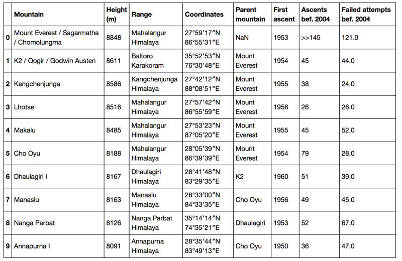
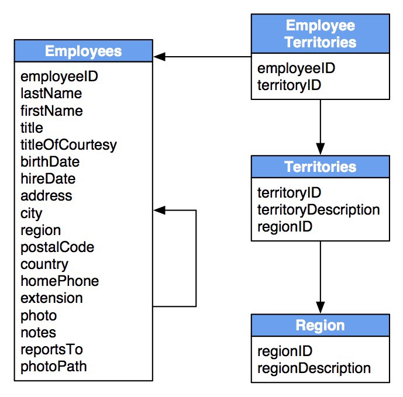
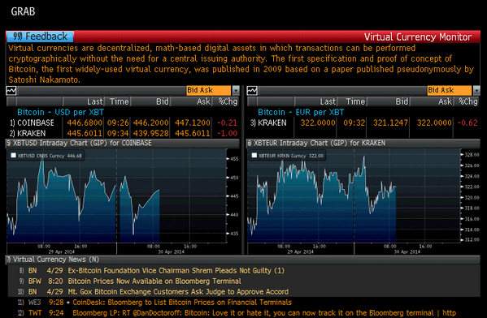
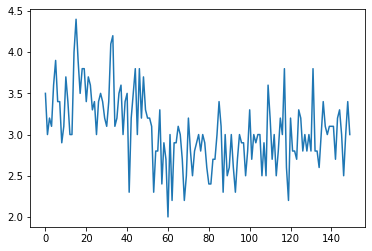

import pandas as pdData Frames
Tabular Data
DataFrame
- A DataFrame (aka a table) is a 2-D labeled data structure with columns of potentially different types.
- types: quantitative, qualitative (ordered, non-ordered, …)
- First column is special: the index

DataFrames are everywhere
- first goal of an econometrician: constitute a good dataframe
- “cleaning the data”
- sometimes data comes from several linked dataframes
- relational database
- dataframes / relational databases are so ubiquitous a language has been developed for them: SQL

Pandas
pandas
- pandas = panel + datas
- created by WesMcKinsey, very optimized
- many options
- if in doubt: minimally sufficient pandas
- small subset of pandas to do everything
- tons of online tutorials ex: doc
creating a dataframe (1)
# from a dictionary
d = {
"country": ["USA", "UK", "France"],
"comics": [13, 10, 12]
}
pd.DataFrame(d)| country | comics | |
|---|---|---|
| 0 | USA | 13 |
| 1 | UK | 10 |
| 2 | France | 12 |
creating a dataframe (2)
# from a matrix
import numpy as np
M = np.array([
[18, 150],
[21, 200],
[29, 1500]
])
df = pd.DataFrame( M, columns=["age", "travel"] )
df| age | travel | |
|---|---|---|
| 0 | 18 | 150 |
| 1 | 21 | 200 |
| 2 | 29 | 1500 |
File Formats
Common file formats
- comma separated files:
csvfile- often distributed online
- can be exported easily from Excel or LibreOffice
- stata files: use
pd.read_dta() - excel files: use
pd.read_excel()orxlsreaderif unlucky
Comma separated file
txt = """year,country,measure
2018,"france",950.0
2019,"france",960.0
2020,"france",1000.0
2018,"usa",2500.0
2019,"usa",2150.0
2020,"usa",2300.0
"""
open('dummy_file.csv','w').write(txt) # we write it to a file136df = pd.read_csv('dummy_file.csv') # what index should we use ?
df| year | country | measure | |
|---|---|---|---|
| 0 | 2018 | france | 950.0 |
| 1 | 2019 | france | 960.0 |
| 2 | 2020 | france | 1000.0 |
| 3 | 2018 | usa | 2500.0 |
| 4 | 2019 | usa | 2150.0 |
| 5 | 2020 | usa | 2300.0 |
“Annoying” Comma Separated File
- Sometimes, comma-separated files, are not quite comma-separated…
- inspect the file with a text editor to see what it contains
- add options to
pd.read_csv
txt = """year;country;measure
2018;"france";950.0
2019;"france";960.0
2020;"france";1000.0
2018;"usa";2500.0
2019;"usa";2150.0
2020;"usa";2300.0
"""
open('annoying_dummy_file.csv','w').write(txt) # we write it to a file136pd.read_csv("annoying_dummy_file.csv", sep=";")| year | country | measure | |
|---|---|---|---|
| 0 | 2018 | france | 950.0 |
| 1 | 2019 | france | 960.0 |
| 2 | 2020 | france | 1000.0 |
| 3 | 2018 | usa | 2500.0 |
| 4 | 2019 | usa | 2150.0 |
| 5 | 2020 | usa | 2300.0 |
Exporting a DataFrame
- pandas can export to many formats:
df.to_...
print( df.to_csv() ),year,country,measure
0,2018,france,950.0
1,2019,france,960.0
2,2020,france,1000.0
3,2018,usa,2500.0
4,2019,usa,2150.0
5,2020,usa,2300.0
df.to_stata('dummy_example.dta')Data Sources
Types of Data Sources
- Where can we get data from ?
- Official websites
- often in csv form
- unpractical applications
- sometimes unavoidable
- open data trend: more unstructured data
- Data providers
- supply an API (i.e. easy to use function)

Data providers
- commercial ones:
- bloomberg, macrobond, factsets, quandl …
- free ones:
dbnomics: many official time-seriesqeds: databases used by quanteconvega-datasets: distributed with altair- covid*: lots of datasets…
- reminder: python packages, can be installed in the notebook with
!pip install ...
!pip install vega_datasetsRequirement already satisfied: vega_datasets in /home/pablo/.local/opt/miniconda3/lib/python3.8/site-packages (0.9.0)
Requirement already satisfied: pandas in /home/pablo/.local/opt/miniconda3/lib/python3.8/site-packages (from vega_datasets) (1.2.1)
Requirement already satisfied: python-dateutil>=2.7.3 in /home/pablo/.local/opt/miniconda3/lib/python3.8/site-packages (from pandas->vega_datasets) (2.8.1)
Requirement already satisfied: pytz>=2017.3 in /home/pablo/.local/opt/miniconda3/lib/python3.8/site-packages (from pandas->vega_datasets) (2020.5)
Requirement already satisfied: numpy>=1.16.5 in /home/pablo/.local/opt/miniconda3/lib/python3.8/site-packages (from pandas->vega_datasets) (1.19.5)
Requirement already satisfied: six>=1.5 in /home/pablo/.local/opt/miniconda3/lib/python3.8/site-packages (from python-dateutil>=2.7.3->pandas->vega_datasets) (1.15.0)import vega_datasets
df = vega_datasets.data('iris')
df| sepalLength | sepalWidth | petalLength | petalWidth | species | |
|---|---|---|---|---|---|
| 0 | 5.1 | 3.5 | 1.4 | 0.2 | setosa |
| 1 | 4.9 | 3.0 | 1.4 | 0.2 | setosa |
| 2 | 4.7 | 3.2 | 1.3 | 0.2 | setosa |
| 3 | 4.6 | 3.1 | 1.5 | 0.2 | setosa |
| 4 | 5.0 | 3.6 | 1.4 | 0.2 | setosa |
| ... | ... | ... | ... | ... | ... |
| 145 | 6.7 | 3.0 | 5.2 | 2.3 | virginica |
| 146 | 6.3 | 2.5 | 5.0 | 1.9 | virginica |
| 147 | 6.5 | 3.0 | 5.2 | 2.0 | virginica |
| 148 | 6.2 | 3.4 | 5.4 | 2.3 | virginica |
| 149 | 5.9 | 3.0 | 5.1 | 1.8 | virginica |
150 rows × 5 columns
Inspecting data
- once the data is loaded as
df, we want to look at some basic properties:df.head(5)# 5 first linesdf.tail(5)# 5 first linesdf.describe()# summarydf.mean()# averagesdf.std()# standard deviations
df.head(2)| sepalLength | sepalWidth | petalLength | petalWidth | species | |
|---|---|---|---|---|---|
| 0 | 5.1 | 3.5 | 1.4 | 0.2 | setosa |
| 1 | 4.9 | 3.0 | 1.4 | 0.2 | setosa |
df.describe()| sepalLength | sepalWidth | petalLength | petalWidth | |
|---|---|---|---|---|
| count | 150.000000 | 150.000000 | 150.000000 | 150.000000 |
| mean | 5.843333 | 3.057333 | 3.758000 | 1.199333 |
| std | 0.828066 | 0.435866 | 1.765298 | 0.762238 |
| min | 4.300000 | 2.000000 | 1.000000 | 0.100000 |
| 25% | 5.100000 | 2.800000 | 1.600000 | 0.300000 |
| 50% | 5.800000 | 3.000000 | 4.350000 | 1.300000 |
| 75% | 6.400000 | 3.300000 | 5.100000 | 1.800000 |
| max | 7.900000 | 4.400000 | 6.900000 | 2.500000 |
df.describe()| sepalLength | sepalWidth | petalLength | petalWidth | |
|---|---|---|---|---|
| count | 150.000000 | 150.000000 | 150.000000 | 150.000000 |
| mean | 5.843333 | 3.057333 | 3.758000 | 1.199333 |
| std | 0.828066 | 0.435866 | 1.765298 | 0.762238 |
| min | 4.300000 | 2.000000 | 1.000000 | 0.100000 |
| 25% | 5.100000 | 2.800000 | 1.600000 | 0.300000 |
| 50% | 5.800000 | 3.000000 | 4.350000 | 1.300000 |
| 75% | 6.400000 | 3.300000 | 5.100000 | 1.800000 |
| max | 7.900000 | 4.400000 | 6.900000 | 2.500000 |
df.describe()| sepalLength | sepalWidth | petalLength | petalWidth | |
|---|---|---|---|---|
| count | 150.000000 | 150.000000 | 150.000000 | 150.000000 |
| mean | 5.843333 | 3.057333 | 3.758000 | 1.199333 |
| std | 0.828066 | 0.435866 | 1.765298 | 0.762238 |
| min | 4.300000 | 2.000000 | 1.000000 | 0.100000 |
| 25% | 5.100000 | 2.800000 | 1.600000 | 0.300000 |
| 50% | 5.800000 | 3.000000 | 4.350000 | 1.300000 |
| 75% | 6.400000 | 3.300000 | 5.100000 | 1.800000 |
| max | 7.900000 | 4.400000 | 6.900000 | 2.500000 |
Manipulating DataFrames
Columns
Columns are defined by attribute df.columns
df.columnsIndex(['sepalLength', 'sepalWidth', 'petalLength', 'petalWidth', 'species'], dtype='object')This attribute can be set
df.columns = ['sLength', 'sWidth', 'pLength', 'pWidth', 'species']
df.head(2)| sLength | sWidth | pLength | pWidth | species | |
|---|---|---|---|---|---|
| 0 | 5.1 | 3.5 | 1.4 | 0.2 | setosa |
| 1 | 4.9 | 3.0 | 1.4 | 0.2 | setosa |
Indexing a column
A column can be extracted using its name as in a dictionary (like df['sLength'])
series = df['sWidth'] # note the resulting object: a series
series0 3.5
1 3.0
2 3.2
3 3.1
4 3.6
...
145 3.0
146 2.5
147 3.0
148 3.4
149 3.0
Name: sWidth, Length: 150, dtype: float64series.plot()<AxesSubplot:>
Creating a new column
df['totalLength'] = df['pLength'] + df['sLength']
df.head(2)| sLength | sWidth | pLength | pWidth | species | totalLength | |
|---|---|---|---|---|---|---|
| 0 | 5.1 | 3.5 | 1.4 | 0.2 | setosa | 6.5 |
| 1 | 4.9 | 3.0 | 1.4 | 0.2 | setosa | 6.3 |
Replacing a column
df['totalLength'] = df['pLength'] + df['sLength']*0.5
df.head(2)| sLength | sWidth | pLength | pWidth | species | totalLength | |
|---|---|---|---|---|---|---|
| 0 | 5.1 | 3.5 | 1.4 | 0.2 | setosa | 3.95 |
| 1 | 4.9 | 3.0 | 1.4 | 0.2 | setosa | 3.85 |
Selecting several columns
- Index with a list of column names
e = df[ ['pLength', 'sLength'] ]
e.head(3)| pLength | sLength | |
|---|---|---|
| 0 | 1.4 | 5.1 |
| 1 | 1.4 | 4.9 |
| 2 | 1.3 | 4.7 |
Selecting lines (1)
- use index range
df[2:4]| sLength | sWidth | pLength | pWidth | species | totalLength | |
|---|---|---|---|---|---|---|
| 2 | 4.7 | 3.2 | 1.3 | 0.2 | setosa | 3.65 |
| 3 | 4.6 | 3.1 | 1.5 | 0.2 | setosa | 3.80 |
Selecting lines (2)
- use boolean
df['species'].unique()array(['setosa', 'versicolor', 'virginica'], dtype=object)bool_ind = df['species'] == 'virginica' # this is a boolean seriee = df[ bool_ind ]
e.head(4)| sLength | sWidth | pLength | pWidth | species | totalLength | |
|---|---|---|---|---|---|---|
| 100 | 6.3 | 3.3 | 6.0 | 2.5 | virginica | 9.15 |
| 101 | 5.8 | 2.7 | 5.1 | 1.9 | virginica | 8.00 |
| 102 | 7.1 | 3.0 | 5.9 | 2.1 | virginica | 9.45 |
| 103 | 6.3 | 2.9 | 5.6 | 1.8 | virginica | 8.75 |
Selecting lines and columns
- sometimes, one wants finer control about which lines and columns to select:
- use
df.loc[...]which can be indexed as a matrix
- use
df.loc[0:4, 'species']0 setosa
1 setosa
2 setosa
3 setosa
4 setosa
Name: species, dtype: objectCombine everything
# Let's change the way totalLength is computed, only for 'virginica'
index = (df['species']=='virginica')
df.loc[index,'totalLength'] = df.loc[index,'sLength'] + 1.5*df[index]['pLength']Reshaping DataFrames
txt_wide = """year,france,usa
2018,950.0,2500.0
2019,960.0,2150.0
2020,1000.0,2300.0
"""
open('dummy_file_wide.csv','w').write(txt_wide) # we write it to a file71txt_long = """year,country,measure
2018,"france",950.0
2019,"france",960.0
2020,"france",1000.0
2018,"usa",2500.0
2019,"usa",2150.0
2020,"usa",2300.0
"""
open('dummy_file_long.csv','w').write(txt_long) # we write it to a file136df_long = pd.read_csv("dummy_file_long.csv")
df_wide = pd.read_csv("dummy_file_wide.csv")Wide vs Long format (1)
- compare the following tables
df_wide| year | france | usa | |
|---|---|---|---|
| 0 | 2018 | 950.0 | 2500.0 |
| 1 | 2019 | 960.0 | 2150.0 |
| 2 | 2020 | 1000.0 | 2300.0 |
df_long| year | country | measure | |
|---|---|---|---|
| 0 | 2018 | france | 950.0 |
| 1 | 2019 | france | 960.0 |
| 2 | 2020 | france | 1000.0 |
| 3 | 2018 | usa | 2500.0 |
| 4 | 2019 | usa | 2150.0 |
| 5 | 2020 | usa | 2300.0 |
Wide vs Long format (2)
- in long format: each line is an independent observation
- two lines mayb belong to the same category (year, or country)
- in wide format: some observations are grouped
- in the example it is grouped by year
- both representations are useful
Converting from Wide to Long
df_wide.melt(id_vars='year')| year | variable | value | |
|---|---|---|---|
| 0 | 2018 | france | 950.0 |
| 1 | 2019 | france | 960.0 |
| 2 | 2020 | france | 1000.0 |
| 3 | 2018 | usa | 2500.0 |
| 4 | 2019 | usa | 2150.0 |
| 5 | 2020 | usa | 2300.0 |
Converting from Long to Wide
df_ = df_long.pivot(index='year', columns='country')
df_| measure | ||
|---|---|---|
| country | france | usa |
| year | ||
| 2018 | 950.0 | 2500.0 |
| 2019 | 960.0 | 2150.0 |
| 2020 | 1000.0 | 2300.0 |
# the result of pivot has a "hierarchical index"
# let's change columns names
df_.columns = df_.columns.get_level_values(1)
df_| country | france | usa |
|---|---|---|
| year | ||
| 2018 | 950.0 | 2500.0 |
| 2019 | 960.0 | 2150.0 |
| 2020 | 1000.0 | 2300.0 |
groupby
groupby is a very powerful function which can be used to work directly on data in the long format.
df_long.groupby("country").agg('mean')NameError: name 'df_long' is not definedMerging
Merging two dataframes
- Suppose we have two dataframes, with related observations
- How can we construct one single database with all informations?
- Answer:
concatenateif long formatmergedatabases if wide format
- Lots of subtleties when data gets complicated
- we’ll see them in due time
txt_long_1 = """year,country,measure
2018,"france",950.0
2019,"france",960.0
2020,"france",1000.0
2018,"usa",2500.0
2019,"usa",2150.0
2020,"usa",2300.0
"""
open("dummy_long_1.csv",'w').write(txt_long_1)136txt_long_2 = """year,country,recipient
2018,"france",maxime
2019,"france",mauricette
2020,"france",mathilde
2018,"usa",sherlock
2019,"usa",watson
2020,"usa",moriarty
"""
open("dummy_long_2.csv",'w').write(txt_long_2)150df_long_1 = pd.read_csv('dummy_long_1.csv')
df_long_2 = pd.read_csv('dummy_long_2.csv')Merging two DataFrames with pandas
df_long_1.merge(df_long_2)NameError: name 'df_long_1' is not defined